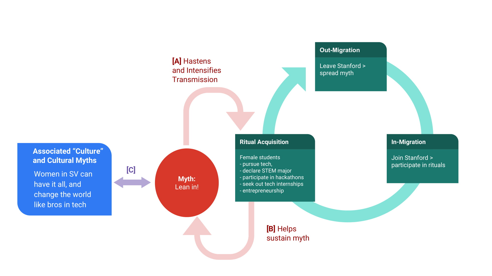

We saw at the end of Origins that various pieces of evidence seem to suggest
We know the second point is false, thanks to (i) statistics and studies on the underrepresentation of women in Silicon Valley and other tech communities more broadly, and (ii) interviews and personal stories from female tech employees and tech entrepreneurs. The first point is also not entirely true (more on this later).
We address the claims above in Analysis. Here, we consider how, regardless of whether 1. and 2. are true, such myths continue to create lasting impressions within Stanford. In particular, we explore

A. The pairing of myth and ritual dates back to the Cambridge Ritualists, who thought that myth does not stand by itself but is tied to ritual. Adopting this approach, we consider how the myths of leaning in and having it all, in accordance with Malinowski, sanction various campus rituals.
At Stanford, women-focused organizations help host panels, mixers and coffee chats with.